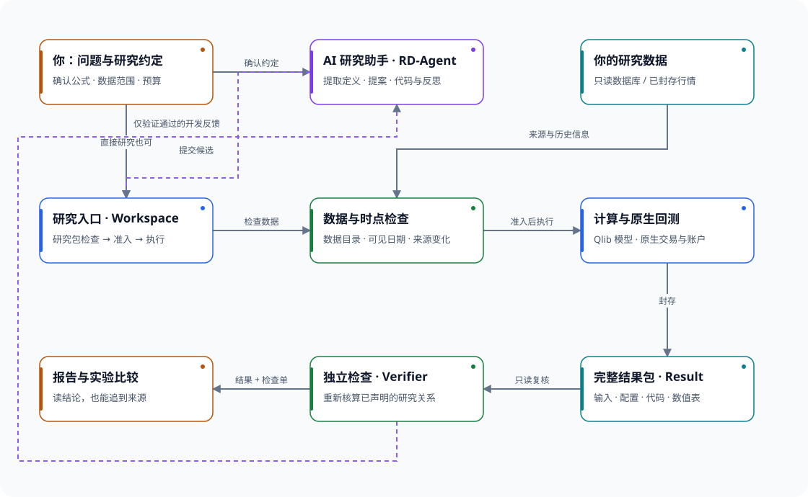
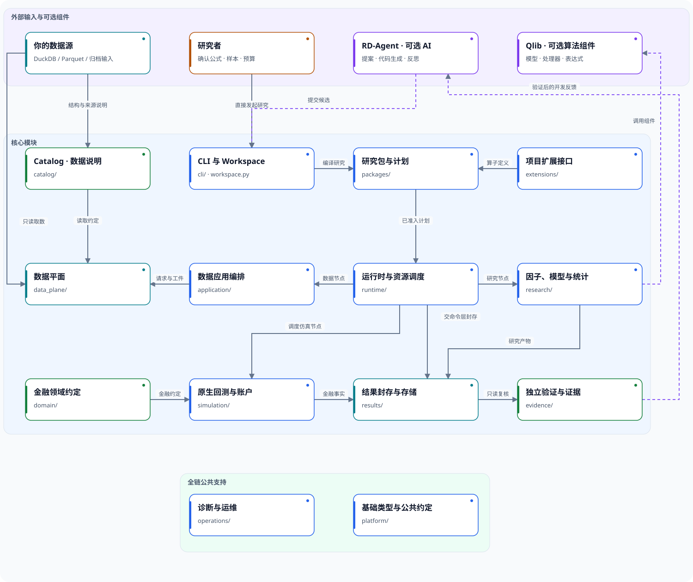
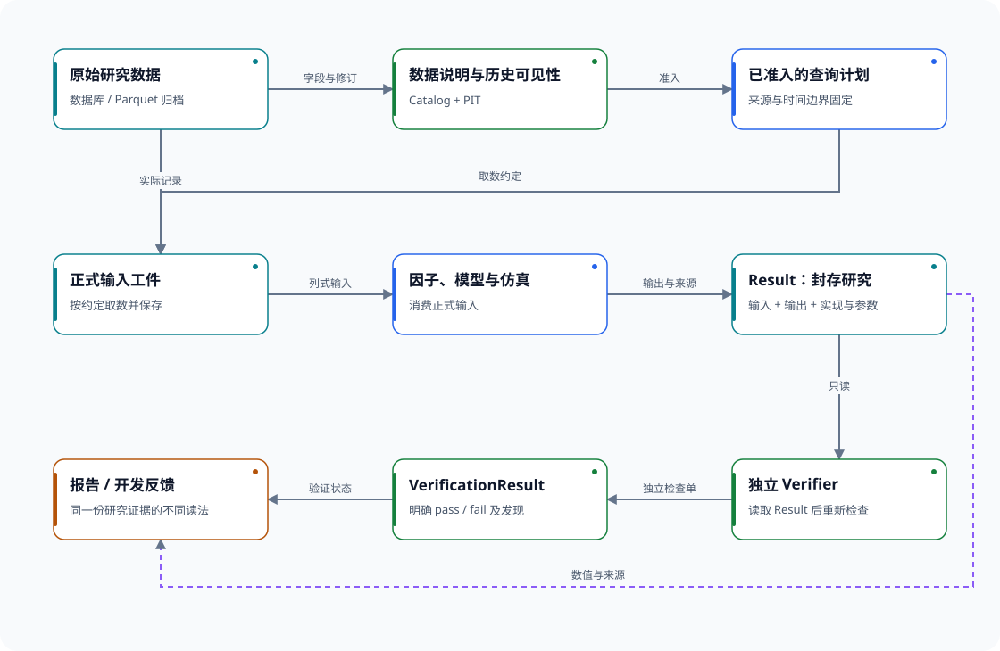
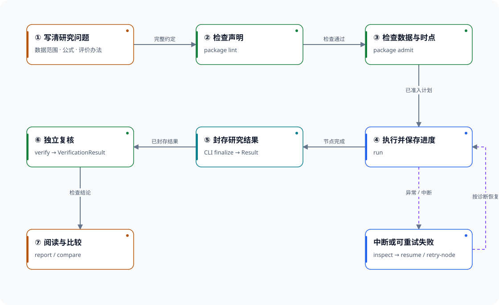
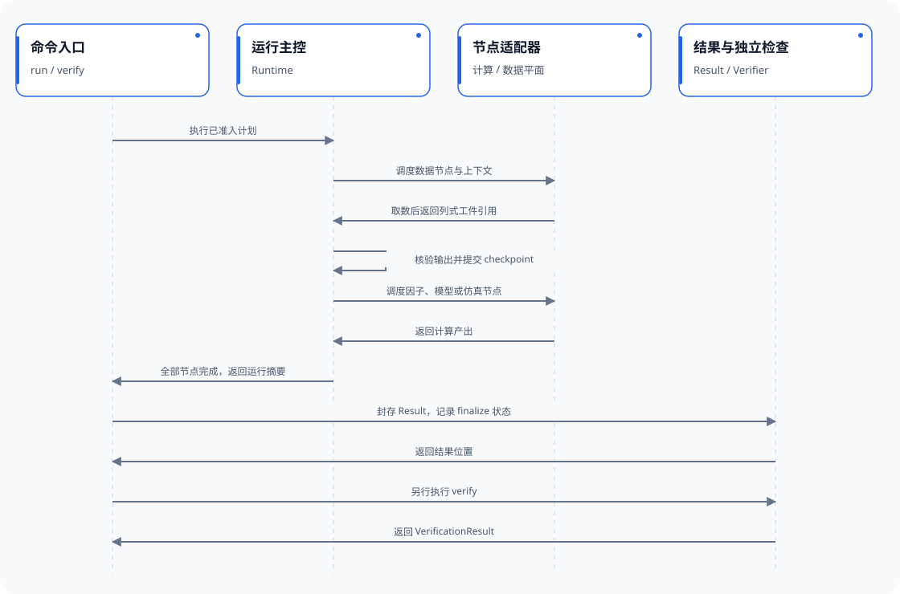
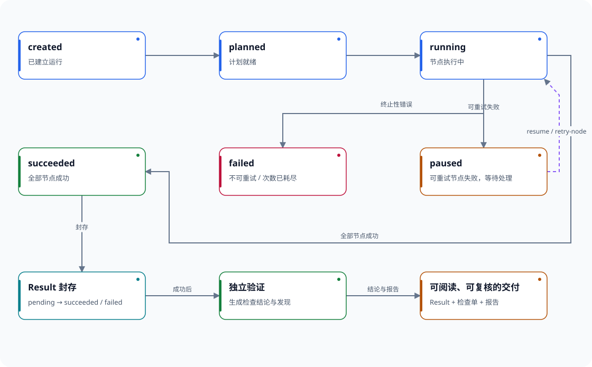

六张图，看懂从研究想法、历史数据，到回测与独立验证的全过程。下方为简图预览；点击直接进入详细交互版，查看完整模块、调用关系和说明。

RD-Agent 提出候选；QuantWitness 负责按约定执行、保留证据并独立复核。

14 个核心模块如何分工，RD-Agent、Qlib 和研究数据从哪里接入。

把数据来源、执行约定、正式输入和验证结果串起来。

把准备、执行与验收分开，失败时知道回到哪一步。

普通列式取数示例；已缓存节点、分钟扫描与归档输入有各自取数入口。

运行、结果封存和独立验证是三个独立的判断。
无需联网即可浏览已下载的图册；源码链接需要网络。图册不包含行情或研究结果。